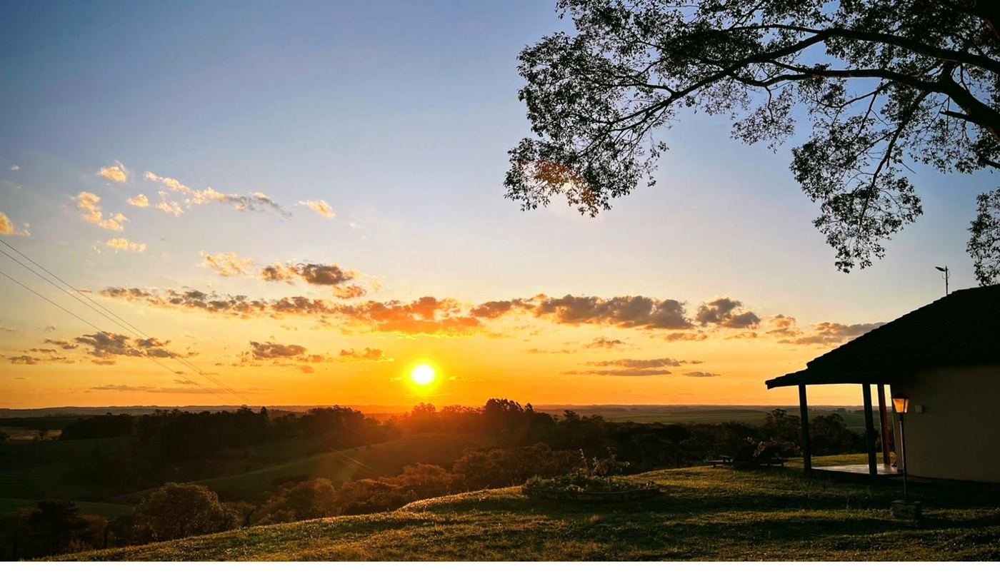
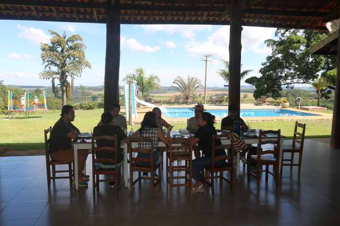

Retiro gastronômico · Serra do Itaqueri · 990m
Seis suítes no alto da Serra do Itaqueri. Parrilla de lenha aberta nos fins de semana. Queijo fresco e pão de fermentação natural feitos aqui. Vinhedo em formação. E um silêncio que se ouve.
A ~200 km de São Paulo, a 35 km de Brotas e 15 km do Patrimônio — no coração do Distrito Turístico Águas e Aventuras.
Lenha, brasa, ferro e tempo. Cortes nobres, costelinha defumada lenta, legumes na chapa — tudo preparado na parrilla aberta, aos fins de semana. A técnica é argentina; os ingredientes, daqui.
Reservar mesa"Chega para almoçar.
Fica para o fim de semana."

Mesa posta, piscina, vale. Tudo no mesmo olhar.
Vinhos selecionados, harmonizados com queijo fresco e pão de fermentação natural — tudo feito aqui.
Cesta com queijo, pão artesanal, geleias e vinho selecionado — entre as fileiras do vinhedo.
Harmonização de vinhos com queijos frescos e pão de fermentação natural. Guiada, sem pressa.
Taças e tábua de queijos com vista para o vale. O horário muda conforme a estação.
Almoço de parrilla servido na mesa longa ao ar livre, sob a sombra da grande árvore.
Imersões de equipe, treinamentos, planejamento estratégico e confraternizações. Seis suítes com exclusividade, parrilla para o grupo, e o silêncio que uma reunião produtiva precisa. Sem distrações urbanas — só foco, comida boa e natureza.
Ideal para grupos de até 12 pessoas com hospedagem, ou day-use para equipes maiores.
Casamentos intimistas, aniversários, encontros de família. O gramado com vista para o vale, a grande árvore e a parrilla formam o cenário. Já recebemos cerimônias de até 60 pessoas ao ar livre.
Solicite uma proposta personalizada via WhatsApp.
O café da manhã tem queijo fresco e pão de fermentação natural feitos aqui, geleias caseiras e frutas da estação.